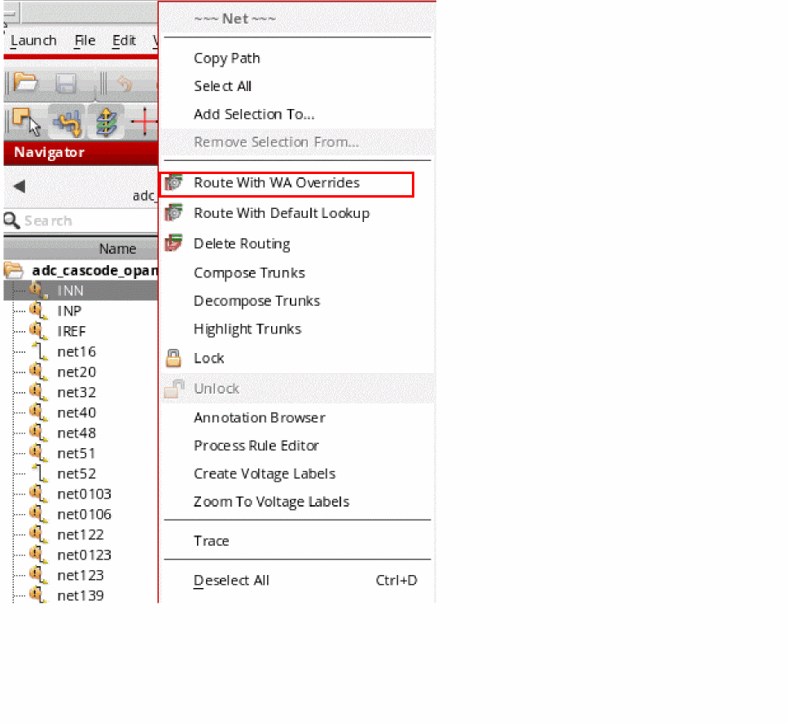
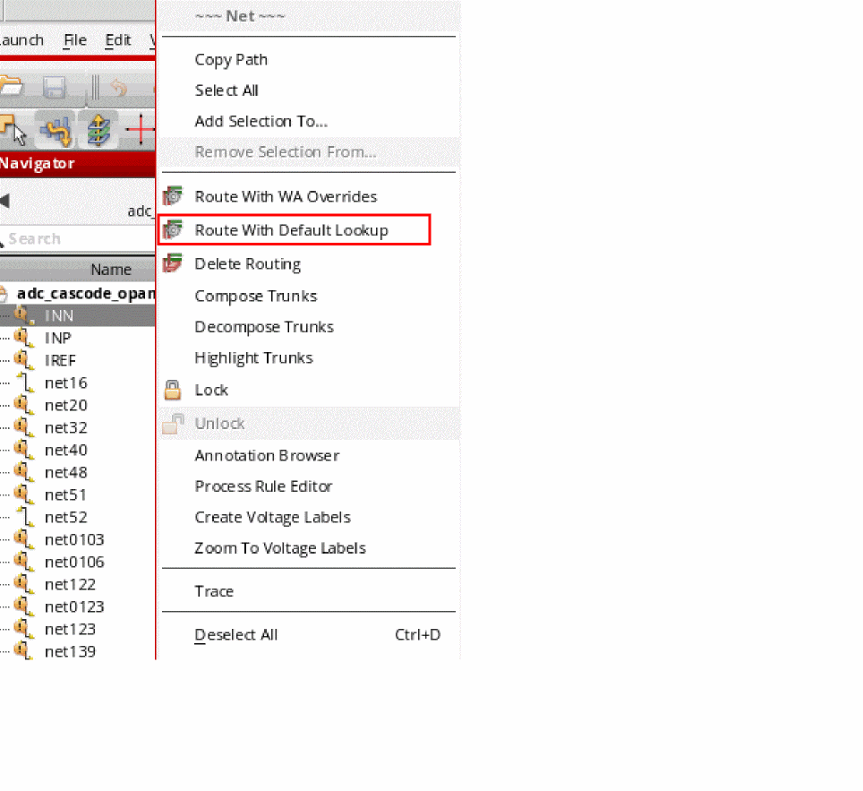

Selected Net Routing
To route a selected net, you can choose from the following routing commands, as appropriate:
-
Route With WA Overrides
Use this command to route the selected nets with the Wire Assistant Overrides taking precedence over the default constraint settings as defined by the Wire Editor Default Constraint Group, or any Net Specific Constraints.
. -
Route With Default Lookup
Use this command to route the selected net by using the default constraint lookup for routing.

To route all the nets in a cellview, right-click the cell and choose Route All Nets.
Cadence recommends that you lock the nets after performing pin-to-trunk routing to ensure that any subsequent routing by assisted routing commands does not rip the nets and re-route them as regular nets.
To delete the routing information and shielding wires on a net, you can right-click the net in the navigator and choose Delete Routing from the shortcut menu. Any routes or nets that are locked, are not deleted.
Related Topics
Locking and Unlocking Nets to Set Routing Status
Return to top